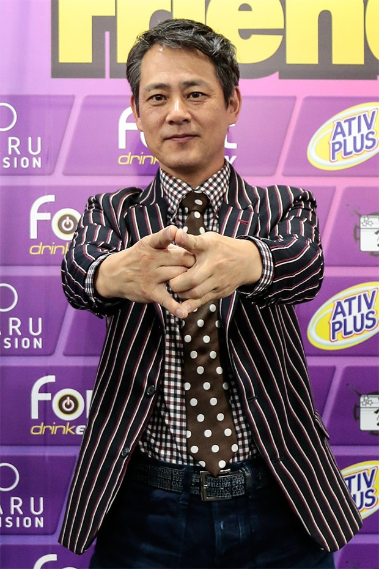

Takumi Tsutsui, o famoso Jiraya (Foto: Rafael Cusato/Edit: Luis Davel)
Ator que interpretou Jiraya comemora carinho dos fãs em SP: “Todo mundo me abraça”
Há mais de 30 anos, crianças e adolescentes paravam em frente à telinha para acompanhar as aventuras de Jiraya,o Incrível Ninja. A série japonesa, que foi ao ar na antiga TV Manchete no final dos anos 1980, foi um sucesso na Ásia e no Brasil e faz parte de um gênero que até hoje encanta gerações: os super-heróis.
Pela décima primeira vez no país, Takumi Tsutsui, ator que dava vida a Toha Yamaji, o Jiraya, conversou com a QUEM sobre a carreira e o carinho dos fãs brasileiros durante o Anime Friends 2019, que acontece nos dias 12 a 14 de julho no Anhembi em São Paulo. O evento reúne convidados da cultura pop e geek do Japão e da Coreia do Sul. Acompanhado de um tradutor, Tsutsui fazia as tradicionais poses de Jiraya para as fotos com os fãs.
“A primeira vez que eu vim para o Brasil, o pessoal foi tão caloroso que eu não acreditava no que eu via. Fiquei um pouco assustado, é diferente de como as pessoas são no Japão. Todo mundo me abraça, todos têm o coração muito aberto. Agora eu que vou abraçar os fãs (risos)”, brinca o ator de 55 anos.
Takumi Tsutsui, o famoso Jiraya (Foto: Rafael Cusato/Edit: Luis Davel)
Após Jiraya, Tsutsui não interpretou mais heróis e continuou atuando em doramas (as novelas dramáticas japonesas), séries e filmes de perseguição policial e investigação. Ele também trabalha como dublador de filmes norte-americanos no Japão.
“Na época da estreia de Jiraya, o pessoal me reconhecia. Mas agora, 30 anos depois, são poucos os que me param na rua”, explica o ator, que não esperava que a série chegasse, literalmente, do outro lado do mundo. “Eu não sabia, mas eu tenho parentes aqui no Brasil e meu primo falou que passava na televisão aqui. Queria entender por que Jiraya é tão famoso aqui. Tenho fãs pequenos, será que são os pais que mostram?”.
Takumi Tsutsui, o famoso Jiraya (Foto: Rafael Cusato/Edit: Luis Davel)
Questionado sobre a famosa expressão “virado o Jiraya”, Tsutsui quer entender de onde surgiu a frase. “Eu ouvi isso há uns quatro anos. Eu queria saber por que a palavra Jiraya ficou marcada (risos). Qual foi a última vez que vocês falaram isso?”, perguntou ele para a equipe da QUEM.
Além de São Paulo, Tsutsui já visitou o Rio de Janeiro, Recife e o Mato Grosso. Ao posar para as fotos, ele até fez questão de falar que estava imitando o Cristo Redentor. “Nós japoneses sabemos que vocês jogam muito bem futebol. De música, eu só sei Garota de Ipanema!”, diz o ator. Questionado sobre uma comida brasileira que gosta, ele foi direto: churrasco.
“Estou hospedado na Liberdade [bairro reduto de imigrantes japoneses]. Outro dia fui comer lámen, mas confesso que o do Japão é mais gostoso”, brinca Tsutsui, que sente vontade de aprender a falar português. “Eu não entendo nada, mas queria aprender um pouquinho, é muito difícil.”
Takumi Tsutsui, o famoso Jiraya (Foto: Rafael Cusato/Edit: Luis Davel)
O carinho dos fãs brasileiros sempre é lembrado pelo ator. “Eu sou muito feliz de ter feito o Jiraya. Eu quero mais eventos assim, chamando artistas de vários lugares do planeta. Os corações de todos se juntam e nos tornamos uma grande família.”
Jiraya foi um dos ícones da cultura pop oriental nos anos 1980 e se junta ao grande time atual de heróis, como os “Vingadores”. Tsutsui conhece todos eles e se dispõe a mostrar suas habilidades mais uma vez: “Eu também quero fazer! Quero tentar [ser um deles]”.